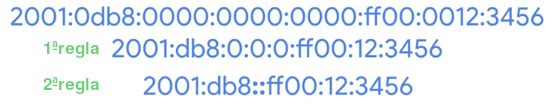
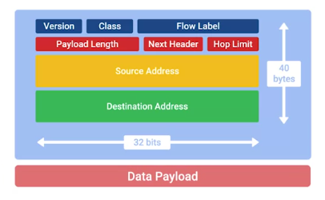

IPV6
Direccionamiento IPv6 y subnetting
La mayor diferencia entre la versión 4 (IPv4) y la versión 6 (IPv6) es el número de bits reservados para una dirección. Mientras que las direcciones IPv4 tienen 32 bits, lo que significa que puede haber unos 4,200 millones de direcciones, las direcciones IPv6 miden 128 bits. 2 a la potencia 128 dará como resultado un número de 39 dígitos de largo.
Así como una dirección IPv4 es en realidad solo un número binario de 32 bits, las direcciones IPv6 son en realidad solo números binarios de 128 bits. Las direcciones IPv4 están escritas en cuatro octetos de números decimales solo para hacerlas un poco más legibles para los humanos. En cambio, las direcciones IPv6 se escriben generalmente en 8 grupos de 16 bits cada uno. Cada uno de estos grupos está compuesto por cuatro números hexadecimales.
Cada dirección IPv6 que comienza con 2001:0db8 fue reservada para documentación y educación, o para libros y cursos como este. Son más de 18 quintillones de direcciones, mucho más grande que todo el espacio de direcciones IPv4, reservadas solo para este fin.
Cuando se trata de acortar una dirección IPv6, tenemos dos reglas. La primera es que puedes quitar todos los ceros a la izquierda de un grupo. La segunda es que cualquier cantidad de grupos consecutivos formados por solo ceros se puede reemplazar escribiendo dos veces dos puntos. Esto solo puede suceder una vez para cualquier dirección específica. De lo contrario, no podrías saber exactamente cuantos ceros se reemplazaron con los dos puntos dobles.

Podemos ver este enfoque adoptado llevado al extremo con una dirección de loopback IPv6. Tal vez recuerdes que con IPv4, esta dirección es 127.0.0.1. Con IPv6, la dirección de loopback se representa con 31 ceros con un 1 al final, lo que se puede condensar en su totalidad hasta quedar con ::1.
Cualquier dirección que comienza con FF00:: se usa para multidifusión, que es una forma de dirigirse a muchos grupos de hosts a la vez.
También es bueno saber que las direcciones que comienzan con FE80:: se usan para unidifusión de enlace local. Las direcciones de unidifusión de enlace local permiten comunicaciones de segmento de red local y se configuran con base en la dirección MAC de un host. Un host IPv6 usa direcciones de enlace local para recibir su configuración de red, que es muy parecido a cómo funciona DHCP. La dirección MAC del host se ejecuta a través de un algoritmo para convertirla de un número de 48 bits en un número único de 64 bits. Luego se inserta en la ID del host de la dirección.
Desde el principio, una dirección IPv6 trazó una línea muy simple entre la ID de red y la ID de host. Los primeros 64 bits de cualquier dirección IPv6 son la ID de la red los segundos 64 bits de cualquier dirección IPv6 son la ID de host. Esto significa que cualquier red IPv6 dada tiene espacio para más de 9 quintillones de hosts.
La división en subredes IPv6 usa la misma notación CIDR con la que estás familiarizado. Esto se usa para definir una máscara de subred contra la porción de ID de red de una dirección IPv6.
Encabezados IPv6
Una de las mejoras más elegantes se hizo en el encabezado de IPv6, que es mucho más simple que el de IPv4.

• El primer campo en un encabezado IPv6 es el campo de la versión. Este es un campo de 4 bits que define qué versión de IP está en uso.
• El siguiente campo se llama campo de clase de tráfico. Este es un campo de 8 bits que define el tipo de tráfico contenido en el datagrama IP y da cuenta de diferentes clases de tráfico para que reciban diferentes prioridades.
• El siguiente campo es el campo de la etiqueta de flujo. Este es un campo de 20 bits que se usa junto con el campo de clase de tráfico para que los routers tomen decisiones. sobre la calidad del nivel de servicio para un datagrama específico.
• A continuación tienes el campo de longitud de carga útil. Este es un campo de 16 bits que define cuánto mide la sección de carga útil de datos del datagrama.
• Luego tienes el campo de encabezado siguiente. Las direcciones IPv6 son cuatro veces más largas que las direcciones IPv4. Eso significa que tienen más unos y ceros, lo que implica más tiempo en ser transmitidas a través de un enlace. Para reducir problemas con los datos adicionales que imponen las direcciones IPv6 en la red, el encabezado IPv6 se desarrolló para que sea lo más corto posible. Una forma de hacerlo es tomar todos los campos opcionales y abstraerlos del mismo encabezado de IPv6. El campo de encabezado siguiente define qué tipo de encabezado viene inmediatamente después del actual. Estos encabezados adicionales son opcionales, por lo que no son necesarios para un datagrama IPv6 completo. Cada uno de estos encabezados opcionales adicionales contienen un campo de encabezado siguiente y dan cuenta de la formación de una cadena de encabezados si hay mucha configuración opcional.
• A continuación tenemos lo que se llama el campo de límite de salto. Este es un campo de 8 bits cuyo propósito es idéntico al del campo TTL en un encabezado IPv4.
• Por último, tenemos los campos de dirección de origen y destino, que tienen 128 bits cada uno. Si el campo de encabezado siguiente especifica otro encabezado, seguiría ahora. Si no, vendría una carga útil de datos de la misma longitud que se especifica en el campo de longitud de la carga útil.
Armonía IPv6 e IPv4
La única manera en que IPv6 quede establecida es desarrollar una forma en la que el tráfico de IPv6 y de IPv4 coexistan. Esto permitiría a las organizaciones individuales hacer la transición cuando puedan.
Un ejemplo de cómo esto puede funcionar es lo que se conoce como espacio de direcciones mapeadas IPv4. Las especificaciones de IPv6 tienen una cantidad de direcciones reservadas que pueden correlacionarse directamente a una dirección IPv4. Cualquier dirección IPv6 que comience con 80 ceros y luego siga con 16 unos, se entiende como parte del espacio de direcciones mapeadas de IPv4. Los 32 bits restantes de la dirección IPv6 son los mismos 32 bits de la dirección IPv4 que debe representar. Esto nos da una vía para que el tráfico IPv4 se mueva a través de una red IPv6.
Entonces, mientras la adopción de IPv6 se generalice cada vez más, necesitará una manera de moverse sobre los viejos restos de IPv4 de la red troncal de Internet. La principal forma de lograrlo hoy es a través de túneles IPv6. Constan de servidores de túneles IPv6 en cualquier extremo de una conexión. Estos servidores de túneles IPv6 toman el tráfico IPv6 entrante y lo encapsulan en datagramas IPv4 tradicionales. Luego, esto se entrega por el espacio de Internet IPv4, donde otro servidor de túnel IPv6 lo recibe. Ese servidor lleva a cabo la desencapsulación y difunde el tráfico IPv6 más allá en la red. Junto con las tecnologías de túnel IPv6, también ha surgido el concepto de proveedores de túneles IPv6. Son empresas que te proveen terminales de túneles IPv6 para que no tengas que incorporar equipos adicionales a tu red.
Protocolos IPV6
https://es.wikipedia.org/wiki/6in4
https://en.wikipedia.org/wiki/Tunnel_Setup_Protocol
https://en.wikipedia.org/wiki/Anything_In_Anything